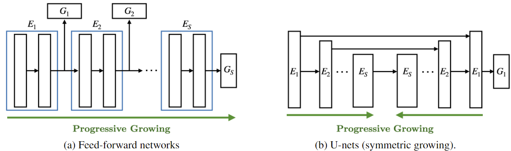

An illustration of the proposed framework for (a) feed-forward networks and (b) U-nets. Models on each client start from a shallower network and synchronously extend until they reach the original full model. With progressive training, ProgFed inherently saves communication and computation costs in federated settings while introducing little additional overhead.
@inproceedings{wang2022progfed,
title={ProgFed: Effective, Communication, and Computation Efficient Federated Learning by Progressive Training},
author={Wang, Hui-Po and Stich, Sebastian U and He, Yang and Fritz, Mario},
booktitle={International Conference on Machine Learning (ICML)},
year={2022}
}